|

|

|

|

|

|

|

|

|

|

|

|

|

|
|
|||||||||||
|
Geschwister Schaly
Hans Göbel steht als erster in der zweiten Reihe...nicht Nr.2 = Weiler Bernhard ( Baldesse Berni)
v.l. Maria, Barbara und Josef Schaly
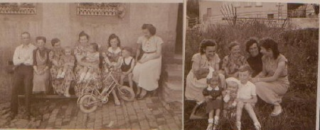
Bruder
Maximin Scholl , Peter Scholl ( Schleida Pida , Schläder, Schlääder Pitta ) aus Maria Laach zu Besuch in der Heimat ca 1936..Elternhaus ,heute Haus Peter Glasen
Kastelerstr. Sein letzter Besuch in Braunshausen war 1966-67 ,,geboren 1895, Profess 1925, + 1971 in Maria Laach........Der Hausname der Familie in Braunshausen war: Schlääda....Bruder Maximin war bekannt mit Konrad Adenauer, der während des 2. Weltkriegs in Maria Laach lebte.........
siehe auch: P.Basilius Sander OSB u. Karl-Heinz Schumacher in LAACHER MÖNCHE BEI DER ARBEIT....
Friedhof Maria Laach
Geburtshaus von Peter Scholl ( Bruder Maximin ) Hausname in Braunshausen Schläda ) später Haus von Peter und Johanna Glasen
Brief von Bruder Maximin vom 27.8,1965
das waren noch Zeiten bei den Bösen,s in Palzem...Ich kann mich noch an den Knet (Knecht) und auch an das große Pferd erinnern. Meine Onkels waren alle trinkfest...ich auch
Neubau von Cilli, Melitta und Heinz Josef Schaly an der Schleid, rechtes Bild...Richtfest..Onkel Bernhard auf dem Dach
v. links Anton, Bernhard und Heinz Josef Schaly
von links Franziska, Anna und Maria Schaly
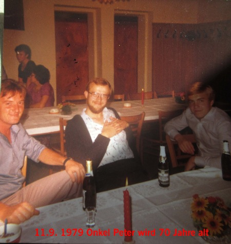
v. links Peter u. Johann Schaly 1986
Fam. Josef Schaly u. Cäcillia geb. Klessner ...Sohn v. Johann Schaly u. Barbara Mörsdorf...Braunshausen. Keine Nachkommen....
Mein Onkel Josef ist 1941 in Rußland gefallen. Er war Sandformer auf der Bous (Mariahütte) Die Firma Carl Gottbill sel. Erben widmete jedem gefallen Mitarbeiter einen solchen Nachruf..
abgegeben an Stiftung Backes Haus in Braunshausen..
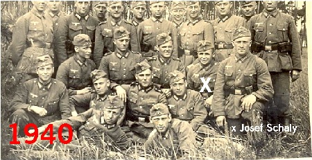
von Links Barbara Plug, Heinz-Josef u. Cilli Schaly
v. links Barbara Straub, Peter Straub, Cilli Schaly mit Heinz -Josef Soldat unbekannt, Hildegard Straub, Soldat unbekannt
Heinz Josef Schaly im Hause vom Großvater...am Fenster der Wasserstein, rechts die Zentrifuge.....
Karneval in Braunshausen um 1957 ..
Foto: Harald Peter Braunshausen
bei Ewes v. links Mörsdorf Bernd , Hares Hans Josef, Breit Heinz, Wagner Bernfried, Schaly Heinz Josef
bei Ewes, v.links Schaly Heinz Josef, Mörsdorf Bernd, Schwarz Werner
von Links, ( Weiler ) Rausche Heiner, Bernd Horst, Schaly Heinz Josef, Steffen Manfred..
Braunshausen an der Schleid ...bei Pütz Hans 1963. Melitta heiratet Kurt Godel aus Völklingen...
. vor dem Hause Pütz an der Schleid ( Kastelerstr)
erster von links Onkel August Jung aus Bosen
Achim Hares wird 70 Jahre alt . Braunshausen im Bürgerhaus
Bernhard
Jung aus Bosen, Sohn v. August Jung u. Maria geb. Schaly
immer unterwegs....und ein großer Fan von Borussia Neunkirchen. Man nannte ihn den Borusse Schaly...leider mußte er sehr früh von uns gehen.
auf der Mariahütte, v links.........?, Scheiber Kurt, Kuhn Hermann, Schaly Heinz-Josef..
v. links Schaly Heinz Josef, Phillip Manfred +
v.links Schaly Heinz-Josef, Backes Alfons, Straub Arnold ( Mäggo)
Hans Werner Müller im Gasthaus zur Post Braunshausen alle sind nicht mehr
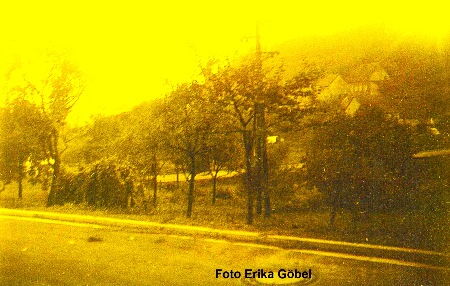
Das Elternhaus der Geschwister Schaly. Erbaut von meinen Urgroßeltern Michael Mörsdorf 1878..Er war zweimal verheiratet.1 Ehe mit Giebel Katharina aus Braunshausen 11.2. 1867...als seine Frau starb heiratete er am 3.2. 1882 Anna Mattes * 7.6. 1844 aus Bierfeld
Der alte Backofen im Hühnerstall. Hier backte meine Großmutter das Brot für die Familie . Auch stand hier der Schleifstein und der Ziehbock, Klemm oder auch Schnitzbock. Gartenwerkzeuge, Hauklotz und verschiedene Werkzeuge die man für Reparaturen brauchte . Die Hühner waren auch dort untergebracht. Mein Großvater fertigte Körbe aus Haselnussrinde an wenn Bedarf bestand. Dies geschah in der Küche. Keiner hatte sich damals was dabei gedacht, als die langen Haselnussäste in der Küche lagen und bearbeitet wurden und später die gerollten Rindenstücke auf dem Ofen kochten. Es roch nicht so schlimm wie das Schweine- debbe ( Kartoffel für die Schweine) das auch dort gekocht wurde. Eigenartig roch auch der Käse den meine Großmutter auf dem Ofen kochte und dann in Gläser abfüllte. Auch war es normal das mein Großvater in den Wasserstein spuckte wenn er Tabak im Mund hatte und später ihn dann auf den Küchenschrank zum trocknen auslegte damit er ihn schneiden und in der Pfeife rauchen konnte.( Man sagte damals de Opa premmt ) Als er dann 1965 im Alter von 89 Jahren starb wurde das Vieh verkauft und die Landwirtschaft eingestellt, die Milch und der Butter im Geschäft gekauft und die alten, nicht mehr gebrauchten Dinge auf die Kipp ( Müll ) gefahren. Dank meiner Sammelleidenschaft konnte ich vieles retten und für die Nachwelt erhalten...Gernot Schaly Januar 2017
hier nun das Werkzeug für die Schuhe zu reparieren . Der Schuhamboss, ein uraltes Modell. Er wurde mit beiden Beinen eingeklemmt. Schuhmacherhammer mit diversen Nägeln und Nähwerkzeug. Auch ein Stiefelknecht ist noch erhalten.
Der Wehrpass unseres Großvaters
hier der Tabak, die Pfeife, Messer, Brille und Feuerzeug unseres
Großvaters.
Dieses Kreuz hat mein Großvater geschnitzt. Es hing früher in der guten Stube. Zwei Engel aus Porzellan standen auf den Sockeln.
Das Kruzifix ist aus Gus und wurde wohl auf der Mariahütte gegossen... alter über 100 Jahre..
auch die Glückwunschkarten und die Anstecksträuße von 1954 sind noch da...
Carnet de Voyage,
Reiseheft meiner Tante Franziska... Das brauchte man wenn man von Braunshausen nach Hermeskeil wollte. ( vom Saargebiet ins Reich ) Die Zollstation war Ausgang Nonnweiler, Richtung Hermeskeil und auch in Otzenhausen, Richtung Neuhütten. Fuhr man mit dem Zug von Hermeskeil, wurde man in Nonnweiler am Bahnhof kontrolliert. Man wurde durch eine lange Baracke geleitet mit vielen Tischen wo man die Taschen abstellte um sie von den Zöllnern durch suchen zu lassen. Wer Pech hatte von den Frauen musste in den Nebenraum zur Visteuse . Die dann eine Leibesvisite durchführte. Denn nicht jede die einen dicken Bauch hatte war damals schwanger. In Hermeskeil waren die Textilien wesentlich billiger als im Saargebiet. Umgekehrt waren die Rauchwaren im Saargebiet billig. Es wurde damals viel geschmuggelt. meine Erinnerungen an diese Zeit G. Schaly
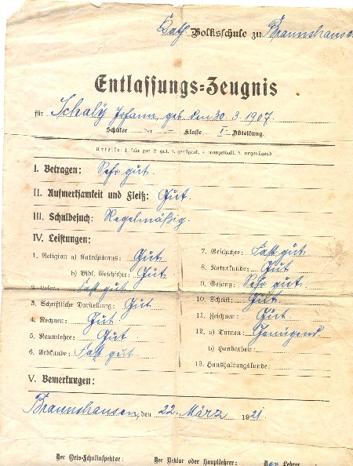
hier die Tagebücher meiner Tante Maria und Franziska. hier wurden Kochrezepte und vieles mehr aufgeschrieben. Meine Tante Franziska schrieb 1943 an die unbekannte Feldpost Nr. 20050 und 35405 . Die Mädchen wurden damals angehalten von Seiten der Partei an Soldaten zu schreiben. Ob meine Tante damals Antwort bekam ist nicht überliefert. Habe die Bücher abgeben an die Stiftung Backes Haus in Braunshausen um sie für die Nachwelt zu erhalten.
1948 Hochzeit Alois Schaly u. Katharina Malburg in Neuhütten
Hochzeit Anton Schaly u. Maria A. Becker in Schwarzenbach
Alois Schaly u. Katharina geb. Malburg
- 1948 - Meine Eltern
Maria Schaly oo August Jung aus Bosen, Barbara und Franziska
Schaly blieben ledig.
v. links, Melitta, Christel, Onkel Toni und Heinz Josef
Onkel Toni auf Heimaturlaub...um 1943...
Kinder: von links Marita, Joachim und Gernot
Braunshausen um 1957
1. Reihe v. links.. Dieter, Ilona, Marita,Bernhard, Gernot
Die Gusenburger Verwandte zu Besuch 1958
v.l. Anton u. Alois Schaly mit den Kindern, Dieter ,Ilona, Bernhard, Marita u. Gernot um 1955-56
unser Großvater Johann Schaly wird 87 Jahre alt...Braunshausen an der Schleid 3 am 1.4. 1963...
Es wurde immer gefeiert, viel getrunken und auch immer gesungen....
Wo's Dörflein taut zu Ende geht und's Mühlenrad am Bach sich dreht Da steht im duftigen Blütenstrauss mein liebes altes Elternhaus.. Dahin...........auch wir Kinder kannten den Text...
auf dem Biehl
Braunshausen 1965
Die Leichenschau bei unserer Großmutter hatte 1959, 1600 FF gekostet.
Kommunionandenken Barbara Schaly
Kommunionandenken Maria Schaly
Anton u. Alois Schaly um 1944
Brief von Anton Schaly aus der Gefangenschaft in Russland vom 2.1. 1949
Onkel Toni,s Pferdebespanntes Infanterie Geschütz wird auf einen Zug verladen.... Onkel Toni war bei der 13 . Infanteriegeschütz Kompanie, Infanterie-Regiment 186, 73 Infanterie Division.
Meine Onkels waren wie alle im Dorf, beim Reichsarbeitsdienst und später bei der Wehrmacht. Vier sind fürs Vaterland gefallen..
Toni mit seiner späteren Frau Maria Amalia Becker
Bernhard Wiesen, Ehemann von Anna Schaly, gefallen in Rußland 27. 2. 1942 Foto, beim Arbeitsdienst
Der Sarg unserer Großmutter hatte 1959, 25000 Frs .
gekostet. Albert Wagner aus Braunshausen hat ihn gefertigt.
das Versehbesteck ist auch noch erhalten
Alois Schaly
- Mein Vater um 1944
3/ G.R. 82 31 Infanterie Division
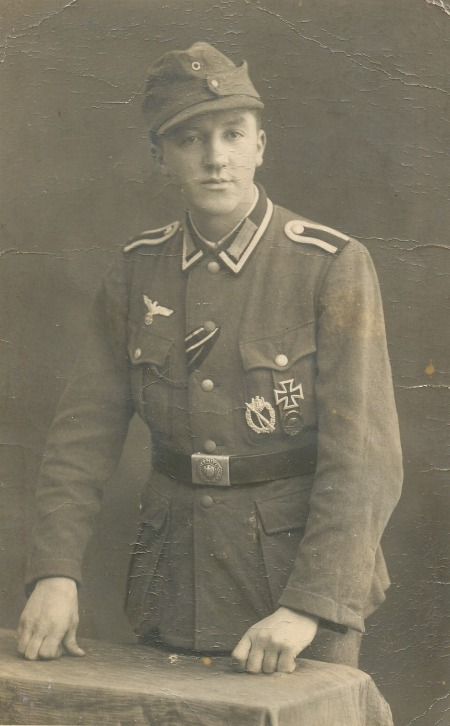
Johann Schaly und Barbara geb. Mörsdorf
Braunshausen / Saar - 1954 - Meine Großeltern - Goldene Hochzeit
GOLDENE HOCHZEIT 1954.. die Kinder von Johann Schaly u. Barbara geb. Mörsdorf...
von links.. Anton, Johann, Peter, Bernhard, Franziska, Maria, Anna, Alois..es fehlen Barbara,
Josef gefallen in Rußland am 26. 10. 1941.
Telegramm aus Bernkastel von den Geschwister Propson. ( Kinder von Gertrud Schaly , verheiratet mit Hilarius Propson ) ,Schwester von Johann Schaly
Johann Schaly und Barbara geb. Mörsdorf
- Meine Großeltern
rechts Margarethe, Katharina, Barbara Schaly 2 Reihe Peter Lermen u. Peter Schaly
Die Gebrüder Schaly- Militärdienst..mein Großvater Johann diente von 1898 bis 1900 beim Infantrie - Regiment Graf Werder in Saarlouis .(4 Rhein.)Nr. 30.. 5te Kompanie.
Hochzeit Peter Schaly u. Anna Kochems
Nonnweiler 1906
Peter Schaly im 1. Weltkrieg
Peter Schaly...2 von rechts, erste Reihe, stehend..
Karte von Peter Schaly an seinen Bruder Johann Schaly, beide im Krieg. geschrieben am 29 .3. 1915...
Lieber Bruder...Habe gestern deinen Brief erhalten. Es freut mich das es dir auch noch gut geht, was ich auch von mir sagen kann. Ich habe jetzt keine Hochwälder mehr bei mir. Der Nik. Petry von Castel war bei mir ist aber..... Montag im Lazarett. Es grüßt dich herzlich dein Bruder Peter
Helmut Schaly Sohn v. Peter Schaly u. Anna Kochems, gefallen...
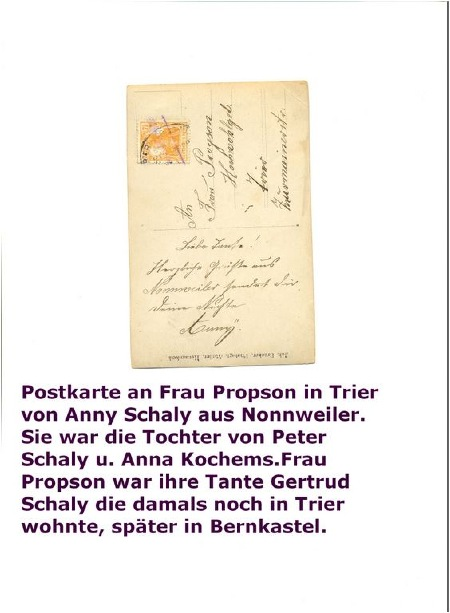
Johann Schaly
(1. v. rechts) - 1914 - Mein Großvater in Koblenz . Er wurde am 31.7. 1914 eingezogen im Alter von 38 Jahren..und kämpfte in Frankreich, Abschnitt 4 der Festung Metz..
John Peter Schaly, Sohn von Johann Schaly und Mary Krane
Kriegskameraden v. Johann Schaly, einer davon ist Joseph Degen von Ettringen Kreis Mayen.....
Johann Schaly
(1. v. rechts stehend) - Mein Großvater im 1. Weltkrieg
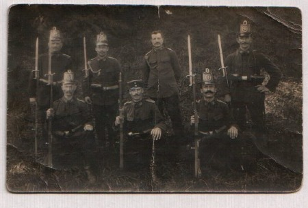
Peter Schaly ...Sohn von Anton Schaly und Margarethe Jakobs
Peter Schaly * 7. 12.1891 Sohn von Anton Schaly Sandformer * 19.5. 1864 Mariahütte + 12.9. 1893 oo 26.1. 1891 Margarethe Jakobs aus Sauschied ( heute Grimburg ) * 19.1. 1864 Sauschied + oo2 .... Enkel von Johann Schaly u. Helene Clomann ,gefallen1. 8. 1918 Chevrésis - Moncenau, letzte Ruhestätte Origny Ste Benoite Frankreich. Block 10, Grab 28...... Keine Nachkommen..... Pate von Susanna Nellinger geb. Lermen aus Gusenburg.....
Fotokarte v. Peter Schaly ( X ) an seinen Onkel Johann Schaly ,beide im Krieg in Frankreich ....
Johann Schaly u. Helene Clomann
(Klomann ) mit den Kindern Margarethe und Anton - 1866 - Meine Urgroßeltern
Jahre später.....
Zeitzeugen konnten noch vor vielen Jahren berichten, das in der Modellwerkstatt Tapeten an den Wänden waren.
Arbeiter der Mariahütte beim Feiern um 1865 1 Anton Hippchen 2 Johann Schaly 3 Anton Schaly
Ein Teil der Belegschaft der Mariahütte im Jahre 1895. Es gibt vier Fotos auf denen die Belegschaft abgebildet ist. ( ausgestellt in Mariahütte ( Firma Diehl) Dieses Foto wurde gefunden auf dem Speicher von Martina Hornberger in Neuhütten. Der Großvater ihrer Mutter, Peter Kolling war Sandgießer auf der Mariahütte + 1913. (Mitteilung v. Rainer Schmitt Neuhütten ) Es ist zu vermuten das jeder Arbeiter ein solches Foto bekam ......... G. Schaly 2012
Ausschnitt vom Foto, Urgroßvater u. Großvater am 31.7.1895
zweite Reihe, zweiter von links..Mathias Clomann Buchhalter auf der Mariahütte, Neffe von meiner Urgroßmutter,
Malburg, die Vohrfahren meiner Mutter aus Neuhütten
Meine Urgroßeltern
- mütterlicher Seite
Christian Malburg 1837 - 1926
Hausname in Neuhütten Marjane
Das Elternhaus meiner Mutter. von rechts 1. Reihe. Thomas * 1914. Anna * 1913. Großmutter Elisabeth geb. Schneider * 1880
+1944 Großvater Thomas Malburg * 1883 + 1957.. Maria * 1911..2 Reihe.. Helene *1917 Friedrich * 1922.. Christian * 1920.. Katharina * 1919, meine Mutter, Peter * 1916
Theo Küpers aus Essen, erster Mann meiner Mutter, gefallen 1941
von links
Anna, Friedrich, Thomas, Großeltern, Lena um 1935
nach dem Tod der Großmutter 1942,v. l. Lena , Maria, Großvater, Friedrich , Anna und Katharina, meine Mutter
Lenas Mann Paul am Wagen, auf dem Wagen Katharina Marx mit den Zwillingen Albert und Ida. Die Namen der größeren Kinder sind nicht mehr bekannt. Foto entstand am Ortseingang von Zinsershütten, der Wald im Hintergrund wurde 1934 abgeholzt.
Pauls Elternhaus ca 1928, vor Schuens auf dem Beilershof, von links Paul, Elisabeth ( oo Schmitt) Kind Ida Marx. Elisabeth Düpre, Mutter von Paul, Katharina ( oo Marx )
der letzte Brief.... von Paul Düpre an seine Frau Lena
Christian Malburg vermisst in Italien
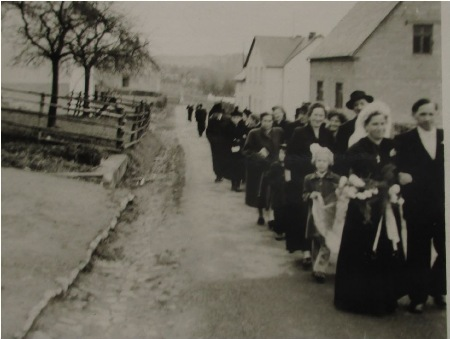
Malburg...
1 meine Mutter Katharina Malburg,2 Friedrich Malburg mein Onkel
auf dem Flur bei der Kartoffelernte, links Tante Lena, Großvater, Cousine Marlies, Tante Gertrud und Tante Maria vor 1957... Kind mit Fahrrad Gerhard Malburg, Sohn v. Peter Malburg u. Elisabeth Schneider
Die Nachkommen der Gebrüder Peter und Thomas Malburg und der Elisabeth Schneider aus Neuhütten
Opas Schwestern et Katt und et Liss...
von links Marjane Fritz, klein,s Maria, Marjane Lena und Maria um 1957-8
in der Küche auf der Bank Fritz und Maria, links der Wasserstein. diesen und einen im Stall, mehr gab es nicht.Über der Bank war der Spiegel mit einer Ablage für Kamm, Bürste und die Zahnbürsten. Das Häuschen mit dem Herz war hinter dem Haus unter dem Kirschbaum.
Hochzeit Maria Malburg heiratet Mathias Triesch aus Otzenhausen
Friedrich Malburg Im Krankenhaus,die Schwestern von Luxemburg zu Besuch
v.links, Peter, Anna, Maria, Thomas , Katharina, Malburg 1984
Marjane - Haus in Neuhütten 2006 Elternhaus meiner Mutter
Gertrud Malburg geb. Philipp aus Thalfang, * 1914 + 2009 Ehefrau von Thomas Malburg, ( Bruder meiner Mutter )
2012 in Dirmingen...Gisela ist 2019 in Rheinböllen verstorben.
Christian Malburg, vermisst in
Arielli, Abruzzen
Italien seit 10. 02. 1944... kehrte von einem Spähtrupp nicht mehr zurück...( 1955 für Tot erklärt) Meine Tanten sagten immer,,was soll aus unserem Bruder Christian geworden sein..... ( nehme an, er viel in die Hände von Partisanen) bis heute konnte keine Grabstätte gefunden werden..
der letzte Brief
die traurige Nachricht an meinen Großvater Thomas Malburg
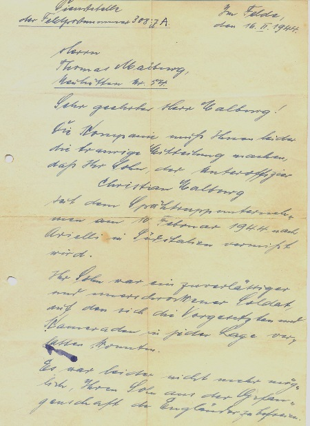
Brüder meiner Mutter
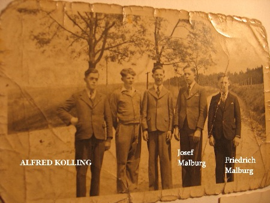
Familie Philipp Schneider ( Bruder meiner Großmutter Elisabeth Malburg geb. Schneider ) mit den Kindern Maria und Elisabeth... links Katharina Schneider geb. Düppre oo 28.6. 1875 Peter Schneider * 20.7. 1851 + 7.3. 1912 ( meine Urgroßmutter ) Neuhütten um 1930 ( Dollbergstr.)
Goldene Hochzeit Müller - Schneider, Maria Schneider, Schwester meiner Großmutter, geb. 8.5. 1883 Neuhütten + 9.11. 1972 am Bodensee...
Friedhof Züsch, letzte Ruhestätte Friedrich Malburg, dahinter Ruhestätte seiner Cousine Maria Moser
Gisela Gehres geb. Maier wohnhaft Dirmingen * 27.11. 1942 + 16.11. 2019 Rheinböllen. Marjanne Gisela....letzte Ruhestätte Friedwald Bingen...
Viele Vorfahren meiner Mutter kamen von der Wallonie,
in Belgien. Sie kamen als Eisenfachleute an den
Züscher-Hammer
Meine Urgroßeltern, großmütterlicher Seite. Michael Mörsdorf 1840 - 1920 aus Braunshausen und seine zweite Ehefrau Anna Mattes 1844-1927 aus Biefeld mit den Kindern, von links Mathias, Johann und meine Großmutter Barbara Mörsdorf
Kommunion Andenken meiner Großmutter Barbara Mörsdorf
.....
Castel 1895..in Braunshausen gab es noch keine Kirche
Johann Mörsdorf u. Klara geb. Lichtmes.... Bruder meiner
Großmutter aus Braunshausen....später Primstal... de Mettnicher Onkel......( Cafe Mörsdorf, Primstal)
© 2009-2011 Gernot Schaly
|

 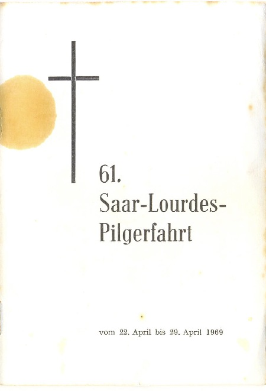
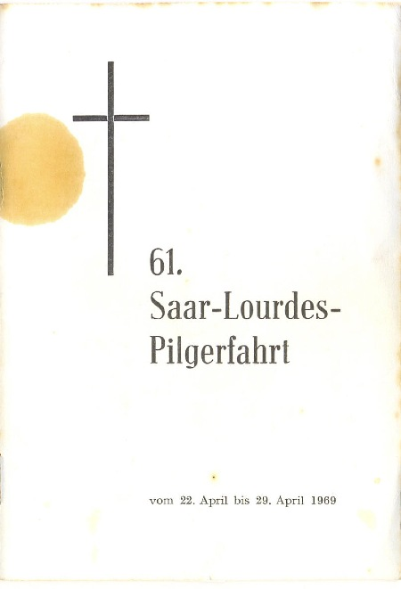


 v.l. Hares Walter, Schaly Heinz Josef, Scheiber Kurt
v.l. Hares Walter, Schaly Heinz Josef, Scheiber Kurt